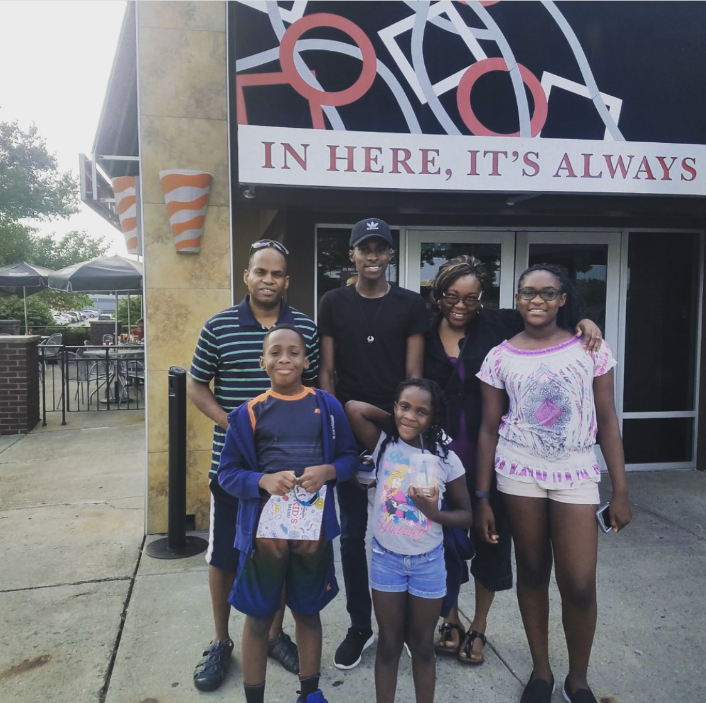

So you know a little bit about me, but let me go into more detail. I grew up in Brooklyn, NY up until fourth grade. I lived with my mom, grandma, and grandpa. The year I moved was also the year my little brother, Marquise, was born. I moved to Upstate New York to live with my uncle and aunt a few months after he was born. There, I lived with my uncle, aunt, and two younger cousins, Katiana and soon-to-be-born Vanessa.
I lived in the small town of Endicott for just over 9 years. Most of my life's biggest memories and accomplishments happened during this time. This was the time when I started excelling in school, made some of my closest friends, and realized that I wanted to go to college. For the longest time, My grandpa had told me that he wanted me to go to college. It wasn't until sophomore year of high school that I wanted to go for myself. My hard work ultimately paid off; in the end, I was able to graduate near the top of my class and attend my dream school: Yale University.